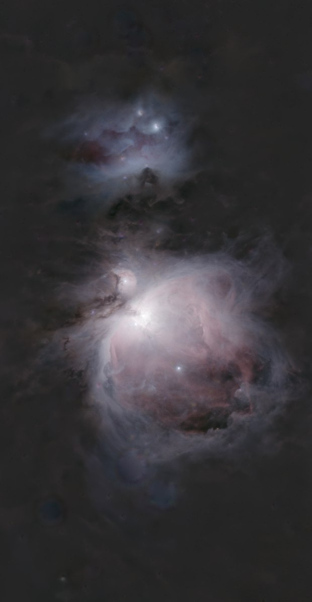
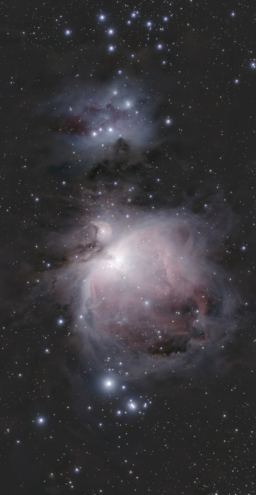

Étoiles
Outil Separate stars
Sépare l'image en deux couches : la nébuleuse sans ses étoiles, et les étoiles seules.
ExpérimentalCOSMOStars, le réseau maison de cet outil, est expérimental et déconseillé pour une image finale : des défauts subsistent sur certaines images. L'outil peut aussi tourner avec RC-Astro StarXTerminator, depuis votre propre installation sous licence.
Comment s'en servir
- Choisir l'étape dans la séquence, ou ajouter l'outil depuis Tools.
- Le régler, puis Preview : l'étape est calculée sans être appliquée.
- Apply garde le résultat ; sinon changer les réglages et relancer Preview.
Réglages
- Nebula / Stars
- La couche montrée : la nébuleuse sans ses étoiles, ou les étoiles seules.
Quand s'en servir
Pour traiter la nébuleuse et les étoiles séparément. Les étoiles deviennent une couche à part, que les autres outils atteignent.
Image
Travaille sur une image linéaire ou étirée.
Exemple


imagecouche nébuleuse